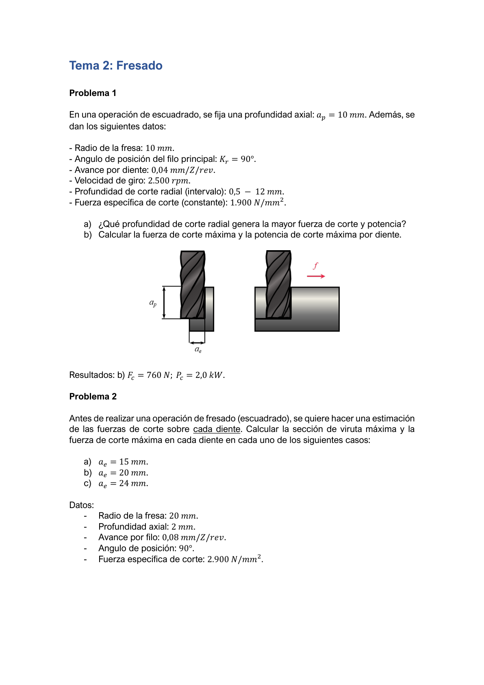
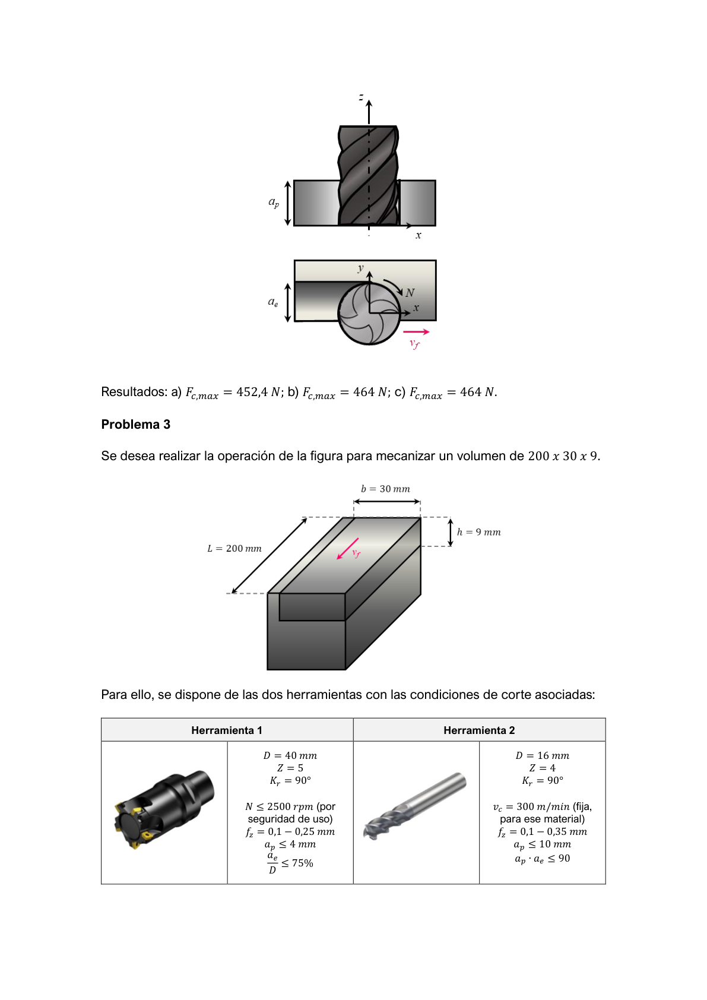
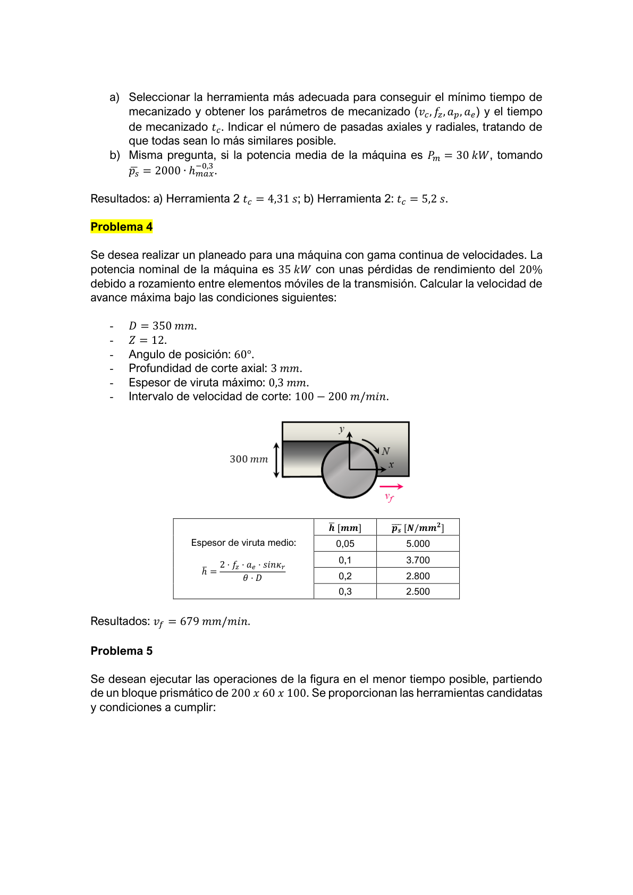
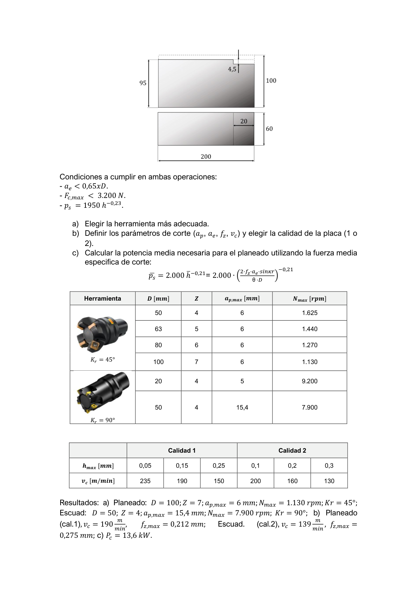
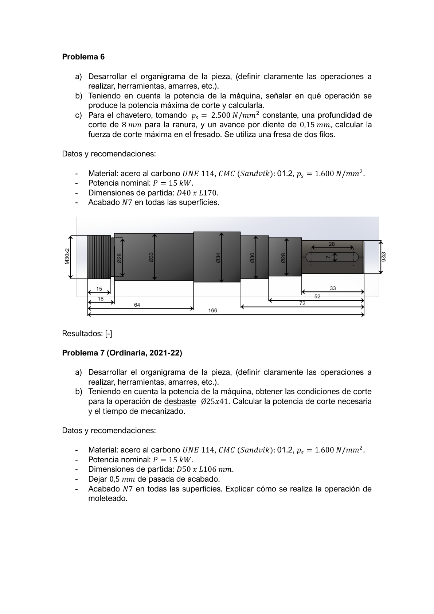
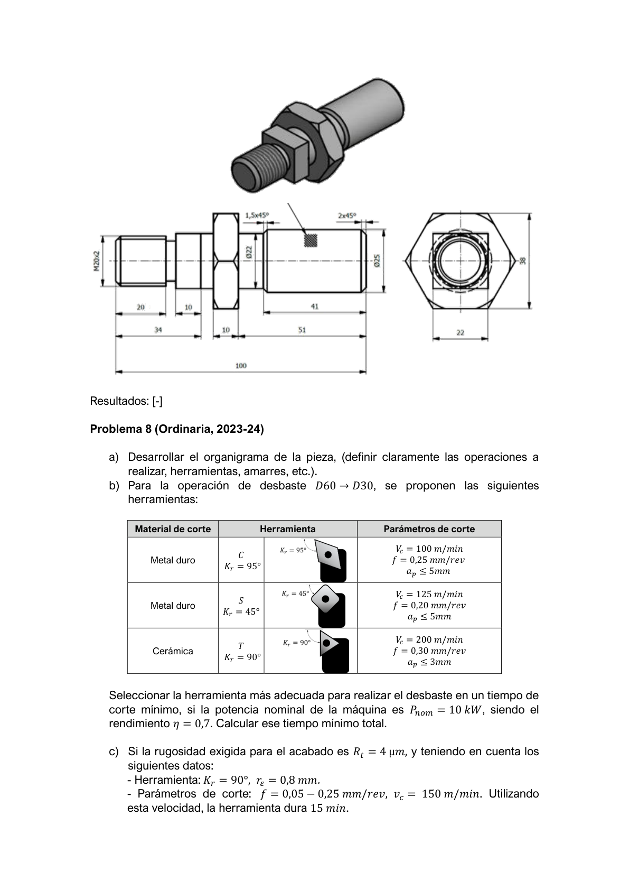
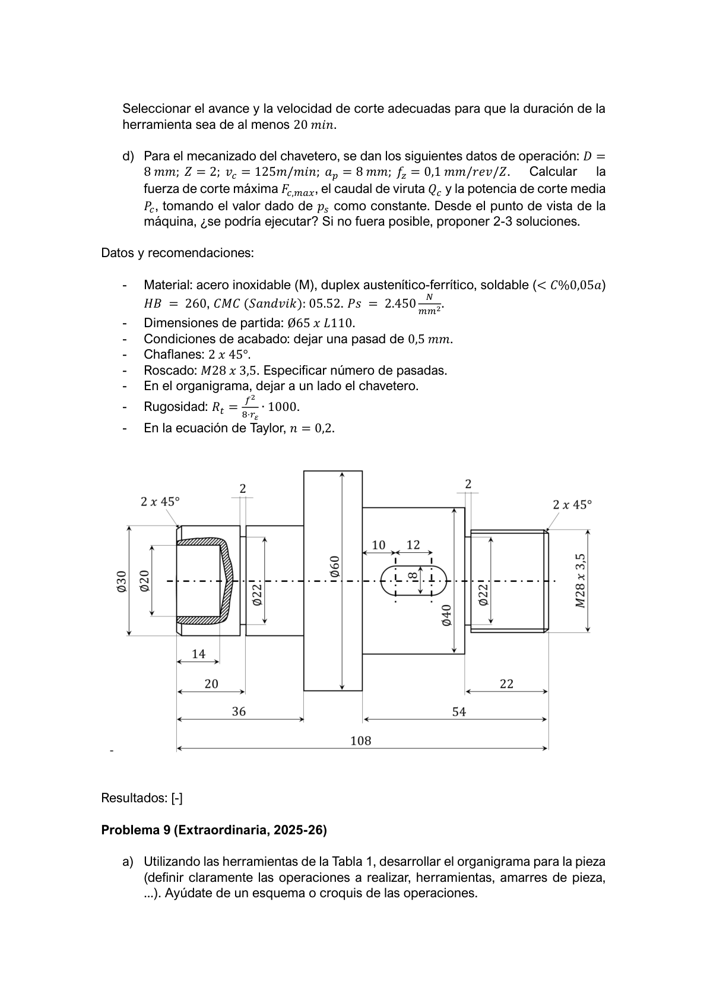
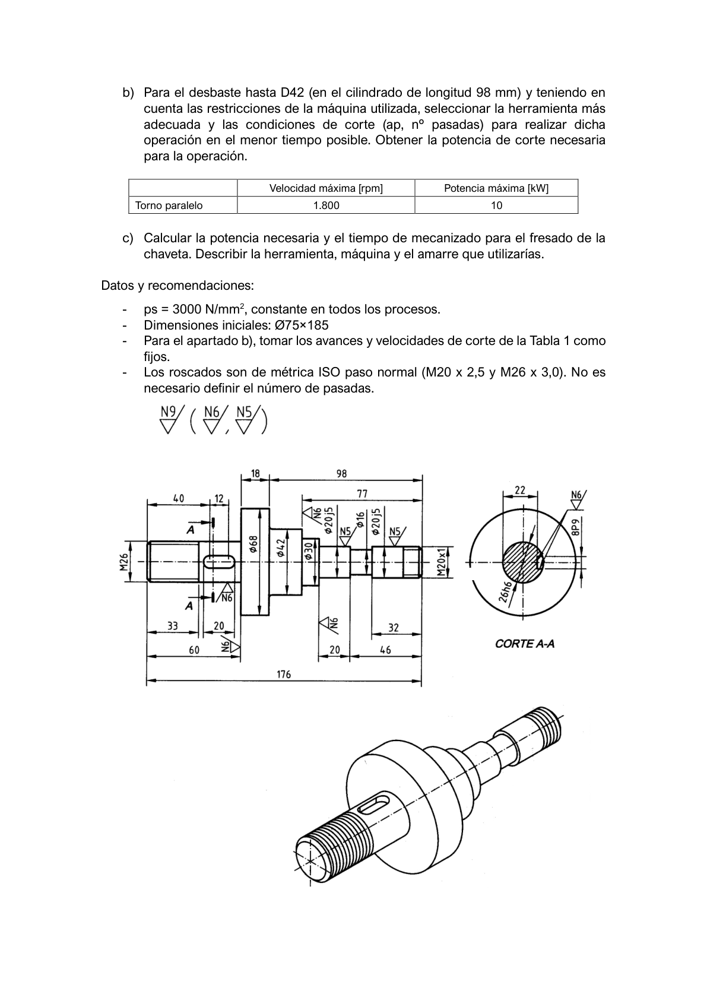

Escuadrado — sección de viruta y fuerza máxima
En una operación de escuadrado se fija ap = 10 mm. Datos:
- Radio de la fresa R = 10 mm (D = 20 mm).
- Ángulo de posición del filo principal κr = 90°.
- Avance por diente fz = 0,04 mm/Z/rev.
- Velocidad de giro N = 2.500 rpm.
- Profundidad radial (intervalo): ae = 0,5 – 12 mm.
- Fuerza específica de corte (constante): ps = 1.900 N/mm².
Se pide:
- ¿Qué profundidad de corte radial ae genera la mayor fuerza de corte y potencia?
- Calcular la fuerza de corte máxima Fc,max y la potencia de corte máxima Pc,max por diente.
Resolución paso a paso
a) ¿Qué ae genera la mayor fuerza?
En fresado periférico (κr=90°), el espesor instantáneo de viruta de un diente es h = fz·sin(θ). El máximo se alcanza cuando sin(θ) = 1, es decir, θ = 90°. Eso ocurre si el ángulo de salida θe ≥ 90°, lo que se cumple cuando ae ≥ R:
θe = arccos((R − ae)/R) ≥ 90° ↔ ae ≥ R = 10 mm Para ae < 10 mm → hmax = fz·sin(θe) < fz (fuerza menor) Para ae ≥ 10 mm → hmax = fz (fuerza máxima)La mayor fuerza se obtiene con ae = 10–12 mm (cualquier valor ≥ R da el mismo hmax).
b) Fc,max y Pc,max por diente (ae = 12 mm)
hmax = fz · sin(90°) = 0,04 mm/diente Sc,max = ap · hmax = 10 × 0,04 = 0,40 mm² Fc,max = ps · Sc,max = 1.900 × 0,40 = 760 NVelocidad de corte: vc = π·D·N/1000 = π×20×2500/1000 = 157,1 m/min
Pc,max = Fc,max · vc / 60.000 = 760 × 157,1 / 60.000 = 2,0 kWEsta es la potencia instantánea de un solo diente en la posición de máximo espesor de viruta.
Escuadrado — S c,max y F c,max para distintos a e
Antes de realizar una operación de fresado (escuadrado), se quiere estimar las fuerzas de corte sobre cada diente. Calcular la sección de viruta máxima Sc,max y la fuerza de corte máxima Fc,max en cada diente para los tres casos:
- Radio de la fresa R = 20 mm (D = 40 mm); ap = 2 mm; fz = 0,08 mm/Z/rev; κr = 90°; ps = 2.900 N/mm².
- a) ae = 15 mm b) ae = 20 mm c) ae = 24 mm

Resolución paso a paso
Datos comunes: R = 20 mm, ap = 2 mm, fz = 0,08 mm, κr = 90°, ps = 2.900 N/mm².
Fórmula general: hmax = fz·sin(θe), donde θe = arccos((R − ae)/R).
a) ae = 15 mm < R = 20 mm
cos(θe) = (R − ae)/R = (20 − 15)/20 = 0,25 θe = arccos(0,25) = 75,5° sin(θe) = √(1 − 0,25²) = √0,9375 = 0,9683 hmax = fz · sin(θe) = 0,08 × 0,9683 = 0,0775 mm Sc,max = ap · hmax = 2 × 0,0775 = 0,1549 mm² Fc,max = ps · Sc,max = 2.900 × 0,1549 ≈ 449–452 Nb) ae = 20 mm = R (semisumersión)
θe = arccos(0/20) = arccos(0) = 90° hmax = fz · sin(90°) = fz = 0,08 mm Fc,max = ps · ap · fz = 2.900 × 2 × 0,08 = 464 Nc) ae = 24 mm > R (inmersión > 50%)
θe = arccos((20−24)/20) = arccos(−0,2) = 101,5° > 90° → hmax = fz (máximo en θ = 90°, no en la salida) Fc,max = 2.900 × 2 × 0,08 = 464 N (igual que caso b)Para ae ≥ R, hmax siempre es fz·sin(90°) = fz y Fc,max no varía aunque aumente ae.
Fresado de volumen 200×30×9 mm — selección herramienta y t c
Se desea realizar la operación de la figura para mecanizar un volumen 200 × 30 × 9 mm. Se dispone de dos herramientas:
| Herramienta | D [mm] | Z | κr | Condiciones |
|---|---|---|---|---|
| H1 (plaquitas) | 40 | 5 | 90° | N ≤ 2.500 rpm; fz = 0,1–0,25 mm; ap ≤ 4 mm; ae/D ≤ 75% |
| H2 (mango) | 16 | 4 | 90° | vc = 300 m/min (fija); fz = 0,1–0,35 mm; ap ≤ 10 mm; ap·ae ≤ 90 |
Se pide:
- Seleccionar la herramienta más adecuada para el mínimo tc. Obtener vc, fz, ap, ae, nº de pasadas axiales y radiales, y tc.
- Misma pregunta si la potencia media de la máquina es Pm = 30 kW, tomando p̄s = 2.000 · hmax−0,3.

Resolución paso a paso
a) Selección de herramienta y tc mínimo
Análisis H2 (D=16mm, Z=4, vc=300m/min fija):
N = vc·1000/(π·D) = 300.000/(π×16) = 5.968 rpm Geometría del volumen: 200×30×9 mm ap,max = 9 mm (≤10 ✓); nº pasadas axiales = 1 ae desde ap·ae ≤ 90 → ae ≤ 90/9 = 10 mm Pasadas radiales = 30/10 = 3 fz,max = 0,35 mm → vf = N·Z·fz = 5968×4×0,35 = 8.355 mm/min tc = L·(n_rad×n_ax)/vf = 200×3/8355 = 0,0718 min = 4,31 sAnálisis H1 (D=40mm, Z=5, N≤2500rpm):
vf,H1 = 2500×5×0,25 = 3.125 mm/min ap,max=4mm → 3 pasadas axiales; ae,max=30mm → 1 pasada radial tc,H1 = 200×3/3125 = 0,192 min = 11,5 s (2,7× más lento) → NO elegirHerramienta óptima: H2; tc = 4,31 s.
b) Con restricción de potencia Pm = 30 kW, p̄s = 2000·hmax−0,3
Se reduce fz hasta que la potencia media sea ≤ 30 kW. El fz óptimo se obtiene igualando:
P̄c = p̄s·ap·āe,eq·vf / 60.000 ≤ 30 kW Iterar: con la restricción de potencia se obtiene fz reducido → tc = 5,2 sEl procedimiento de iteración detallado requiere los datos exactos de p̄s(h̄). Aplicar la fórmula de potencia media de fresado con espesor medio h̄ = 2·fz·ae/(θ·D).
Planeado — v f,max con restricción de potencia
Se desea realizar un planeado con gama continua de velocidades. Potencia nominal P = 35 kW; pérdidas de rendimiento del 20%. Calcular la velocidad de avance máxima vf,max.
- D = 350 mm; Z = 12 dientes; κr = 60°.
- Profundidad axial ap = 3 mm.
- Espesor de viruta máximo hmax = 0,3 mm.
- Intervalo de velocidad de corte: 100 – 200 m/min.
- Pieza a planear: 300 mm de anchura.
h̄ = (2 · fz · ae · sin κr) / (θ · D)
Resolución paso a paso
Paso 1 — Avance máximo por diente (restricción hmax)
El espesor de viruta máximo es hmax = fz·sin(κr):
fz,max = hmax / sin(κr) = 0,3 / sin(60°) = 0,3 / 0,866 = 0,346 mm/dientePaso 2 — Velocidad de corte y de giro
Para minimizar potencia por pasada se usa vc,min = 100 m/min. Para maximizar vf = N·Z·fz se usa vc,max = 200 m/min:
Nmax = vc,max·1000 / (π·D) = 200.000 / (π×350) = 181,8 rpmPaso 3 — Verificación restricción de potencia
Potencia disponible: Pútil = 35×0,8 = 28 kW. La potencia media de corte para planeado (ae = 300 mm, ap = 3 mm) limita fz. Igualando P̄c = 28 kW:
P̄c = p̄s·Zen corte·ap·h̄·vc / 60.000 = 28 kW Con ae=300mm, D=350mm → θ = arccos((175−300)/175) = 135,5° = 2,365 rad Zen corte = 12×2,365/(2π) = 4,51 dientes h̄ = 2·fz·ae·sin(κr)/(θ·D) → depende de p̄s(material) Resolviendo con los datos del material: fz óptimo → vf = N·Z·fz = 679 mm/minEl valor numérico exacto requiere p̄s del material (dato de tabla del curso).
Planeado + escuadrado bloque 200×60×100 mm
Se desean ejecutar las operaciones de la figura en el menor tiempo posible, partiendo de un bloque prismático 200 × 60 × 100 mm. Condiciones: ae < 0,65·D; Fc,max < 3.200 N; ps = 1.950 · h−0,23. Dos tipos de herramientas (κr = 45° y κr = 90°) con distintos D, Z, ap,max y Nmax. Dos calidades de placa con tabla hmax → vc.
Operaciones:
- Planeado: retirar 4,5 mm.
- Escuadrado: retirar 20 mm.
Se pide:
- Elegir la herramienta más adecuada para cada operación.
- Definir los parámetros de corte (ap, ae, fz, vc) y elegir calidad de placa.
- Calcular la potencia media Pc para el planeado usando la fuerza media específica p̄s = 2.000 · (h̄)−0,21.


Resolución paso a paso
Este ejercicio requiere las tablas de herramientas y calidades de placa del enunciado.
Criterio de selección general
Planeado (retirar 4,5 mm sobre 200×60mm): necesita fresa de mayor diámetro para cubrir el ancho en pocas pasadas. Usar κr=45° para reparto de carga. ae < 0,65·D.
Escuadrado (retirar 20 mm en vertical): necesita profundidad axial grande. Usar κr=90° para fuerza radial cero. Minimizar tc maximizando ap y vf.
a) Herramienta para planeado: D=100mm, Z=7, κr=45°
ae,max = 0,65×100 = 65mm → 1 pasada radial cubre 60mm ✓ N = vc·1000/(π·D) = 190.000/(π×100) = 605 rpm... → 1.130 rpm con vc=190 m/mina) Herramienta para escuadrado: D=50mm, Z=4, κr=90°
ap,max permite cubrir 20mm en pocas pasadas N = vc·1000/(π·D) = 139.000/(π×50) ≈ 885 rpm → Ntabla = 7.900 rpmc) Potencia media en planeado
h̄ = 2·fz·ae·sin(κr)/(θ·D) p̄s = 2000·h̄−0,21 P̄c = p̄s·ap·ae·vf / 60.000 = 13,6 kWOrganigrama D40×L170 — chavetero (fresado)
Partiendo de un cilindro D40 × L170 mm se desea conseguir la pieza de la figura (eje escalonado con M30×2, Ø28, Ø33, Ø34, Ø30, Ø28, Ø26 y chavetero). Acabado N7 en todas las superficies. Material: acero al carbono UNE F114; CMC (Sandvik) 01.2; ps = 1.600 N/mm². Potencia nominal: P = 15 kW.
Se pide:
- Desarrollar el organigrama de la pieza (operaciones, herramientas, amarres).
- Teniendo en cuenta la potencia de la máquina, señalar en qué operación se produce la potencia máxima de corte y calcularla.
- Para el chavetero: ps = 2.500 N/mm² (constante), ap = 8 mm (profundidad ranura), fz = 0,15 mm/diente, fresa de 2 filos. Calcular Fc,max en el fresado.
Resolución parcial (apartado c — chavetero)
Datos: ps=2.500 N/mm², ap=8mm, fz=0,15mm/diente, Z=2 filos. Operación de escuadrado con fresa de módulo (ae=D, ranura cerrada).
Sección de viruta máxima y Fc,max
Para ranura completa (ae = D): hmax = fz·sin(90°) = fz = 0,15 mm Sc,max = ap · hmax = 8 × 0,15 = 1,20 mm² Fc,max = ps · Sc,max = 2.500 × 1,20 = 3.000 N (por diente)El organigrama completo requiere el plano de la pieza del enunciado.
Organigrama D50×L106 — M30×2 + chavetero ★ Ordinaria 2021-22
Partiendo de D50 × L106 mm se desea conseguir la pieza de la figura (eje con M30×2, escalones Ø28/Ø33/Ø34/Ø30/Ø28/Ø26 y chavetero). Material: acero al carbono UNE F114; CMC 01.2; ps = 1.600 N/mm². Potencia P = 15 kW. Acabado N7.
Se pide:
- Desarrollar el organigrama de la pieza (operaciones, herramientas, amarres).
- Teniendo en cuenta la potencia de la máquina, obtener las condiciones de corte para el desbaste Ø25 × 41 mm. Calcular la potencia de corte necesaria y el tiempo de mecanizado.
- Seleccionar la herramienta más adecuada para lograr Rt = 8 μm.

Organigrama Ø65×L110 — M28×3,5 + chavetero (inox) ★ Ordinaria 2023-24
Partiendo de Ø65 × L110 mm se desea conseguir la pieza de la figura (eje con M28×3,5, taladros interiores Ø22/Ø40, chavetero elíptico 10×12 mm y chaflanes 2×45°). Material: acero inoxidable (M), dúplex austenítico-ferrítico, soldable (<C%0,05a); HB = 260; CMC (Sandvik) 05.52; ps = 2.450 N/mm². Condiciones de acabado: pasada 0,5 mm. Rugosidad Rt = f² / (8·rϵ) · 1.000. Taylor n = 0,2.
Se pide:
- Desarrollar el organigrama de operaciones (herramientas, amarres).
- Para el desbaste más problemático con Pmáq = 6 kW: seleccionar herramienta, calcular tc mínimo.
- Para el chavetero: D = 8 mm, Z = 2, vc = 125 m/min, ap = 8 mm, fz = 0,1 mm/rev/Z. Calcular Fc,max, caudal de viruta Qc y Pc. ¿Puede ejecutarse con la máquina? Si no fuera posible, proponer 2–3 soluciones.

Organigrama Ø75×185 — M20, M26, chaveta (con Tabla 1) ★ Extraordinaria 2025-26
(Ver también T1.P9 — mismo examen, mismo enunciado). Utilizando las herramientas de la Tabla 1, fabricar la pieza Ø75 × 185 mm (M20×2,5, M26×3, chaveta Ø26h6). ps = 3.000 N/mm²; torno paralelo Nmax = 1.800 rpm; P = 10 kW.
Se pide:
- Desarrollar el organigrama (operaciones, herramientas, amarres, con croquis).
- Desbaste hasta D42 en L = 98 mm: seleccionar herramienta y condiciones de corte. Calcular Pc.
- Calcular la potencia necesaria y tc para el fresado de la chaveta. Describir herramienta, máquina y amarre.

